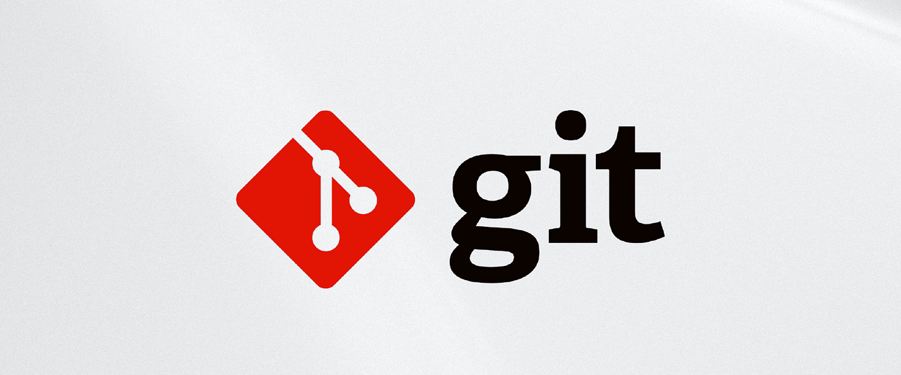

Ma olen Noorem Tarkvaraarendaja
Tere! Minu nimi on Iryna. Ma õpin ja töötan tarkvaraarenduse valdkonnas. Mulle meeldib lahendada keerulisi probleeme ja õppida uusi tehnoloogiaid.
Minu Oskused
Õpitud ained on:- Projecti loomine
- Kontoritöö tarkvara
- Arvuti- ja taristu osad
- Multimeedia
Minu Projektid
WP PortfoolioMVP (Minimum Viable Product)
MVP tähendab minimaalset elujõulist toodet, millel on ainult põhifunktsioonid. See luuakse hüpoteeside testimiseks ja nõudluse analüüsimiseks. MVP põhimõte aitab teie koodi korrastada, eraldades rakenduse loogika kasutajaliidest. Oma projektides saan kasutada MVP-d projekti hõlpsaks testimiseks ja hooldamiseks, jagades selle mudeliks (M), vaateks (V) ja esitlejaks (P).

- Kiirelt toodet turule tuua.
- Testida võtmefunktsioonide vajadust.
- Koguda andmeid kasutajakäitumise kohta.
- Optimeerida arenduskulusid.
- Parandada toodet järk-järgult tagasiside põhjal.
Remote repository

Kaughoidla loomine ja vajalike käskude kasutamine:
- Minge GitHub ja logige sisse.
- Vajutage nuppu New (paremal esilehel või jaotises "Repositories").
- Sisestage hoidla nimi (näiteks
my-project). - Valige nähtavus (Public või Private).
- Vajutage Create repository.
Kasuta järgmisi käske, et siduda kohalik projekt kaughoidlaga:
1. Algatab Git-hoidla kohalikus kaustas:
git init
2. Lisab kõik failid indekseerimiseks:
git add .
3. Loob commiti koos sõnumiga:
git commit -m "Esimene commit"
4. Nimetab põhiharuks "main":
git branch -M main
5. Lisab kaughoidla URL-i.:
git remote add origin https://github.com/kasutajanimi/my-project.git
6. Saadab kohalikud muudatused kaughoidlasse:
git push -u origin main